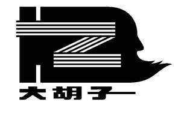

Trade Mark Journal No.2025/022 30 May 2025
UK00004202819 13 May 2025 (9,16,17)

- Class 9
- Optical security features and security feature carriers for banknotes; optical security foils, primarily of plastics, for certifying the authenticity of persons, goods, documents, passports/IDs and other identification documents, certificates, banknotes, bills, payment means or money replacement means or other documents of values; sheets and foils of metal which are encoded or provided with optical structures, as identification devices, authentication devices and money replacement means; electronic security tags for goods; security threads of plastics in form of encoded narrow stamping foil strips, transfer foil strips or laminating foil strips; identification, authentication and money replacement means, namely data carriers (encoded) in the form of foil strips, tokens, cards, discs, tags, bands, sheets and foils; Electronic tags for goods.
- Class 16
- Paper; label paper; printing paper; wood pulp paper; art paper; filter paper; filtering materials of paper; opaque paper; heat sensitive paper; toilet paper; kraft cardboard ; waterproof cardboard; tickets; tags for index cards; graphic prints; printed matter; sealing wafers; labels of paper or cardboard; self-adhesive paper; printed publications; lithographic works of art; plastic film for wrapping; wrapping paper; boxes of paper or cardboard; sheets of reclaimed cellulose for wrapping; viscose sheets for wrapping; packaging material made of starches; absorbent sheets of paper or plastic for foodstuff packaging; humidity control sheets of paper or plastic for foodstuff packaging; packing [cushioning, stuffing] materials of paper or cardboard; paper cartons for delivering goods; plastic bubble film for wrapping; food wrapping plastic film for household purposes; stationery; adhesives [glues] for stationery or household purposes; starch paste [adhesive] for stationery or household purposes; Rubber adhesives [glues] for stationery or household purposes; Hectographs.
- Class 17
- Liquid rubber; rubber solutions; sealant compounds for joints; elastic yarns, other than for textile use; elastic threads, other than for textile use; threads of plastic for soldering; plastic materials in the form of boards [semi-finished products]; threads of rubber, other than for textile use; plastic substances, semiprocessed; threads of plastic materials, other than for textile use; sealing strips of plastics; sealing strips (Non-metallic -); plastic seals; plastic film, other than for wrapping; sew-on tags of rubber for clothing; non-conducting materials for retaining heat; insulating materials; foils of metal for insulating; insulating refractory materials; insulating paper; insulating films; insulating coatings; waterproof packings; padding materials of rubber or plastics; insulating inks; packing [cushioning, stuffing] materials of rubber or plastics; chemical fibres not for textile use, semi-processed plastic ribbon, semiprocessed plastic ribbon with an etched metal coating, polymeric and metallised polymeric threads, none for textile use, namely, plastic threads for use in currency and security documents; threads of plastic materials (not for textile use) made of plastic threads comprised of chemical fibres, semiprocessed plastic ribbon threads, semi-processed plastic ribbon threads with an etched metal coating, polymeric and metallized polymeric plastic threads, all for use in currency and security documents; security threads namely, chemical fibre thread not for textile use that is suitable for incorporation in and/or mounting on security documents, identification labels, tags or bank notes.
Bigbeard Packaging Material Co., Ltd.
Representative: Haseltine Lake Kempner LLP